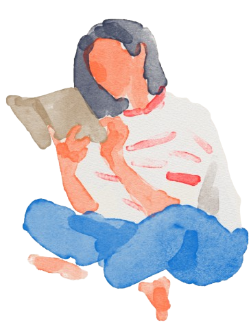

HOBBIES
Jugar Video Juegos
Jugar video juegos con mis amigos. Entre mis favoritos están: LOL, Valorant y Fornite. Ultimamente, nos
hemos enganchado a jugar Peak, un juego colaborativo donde debemos escalar una montaña para huir.

Ver Anime
Mi anime favorito es One Piece, me gusta que no es solo un anime de piratas. El anime en general, no son solo dibujos animados. Muchos de ellos tienen personajes complejos y muchas criticas sociales.

Escuchar musica
Cuando trabajo, mientras estudio, mientras limpio, mientras voy en la calle. La musica es algo que me encanta. Mis gustos son tan variados que el algoritmo de spotify siempre esta medio confundido.

Leer
Leer un libro es transportarse a a otro mundo completamente distinto, es como saltar entre mundos y olvidar un rato la realidad. Algunos otros nos hacen reflexionar. Aun no estoy segura de la cantidad de veces que he leido Harry Potter, cuantas veces he subido a un tren con Anna Keranina, cruzado a Narnia o cuantas veces he llorado con Ana Frank en el atico.
